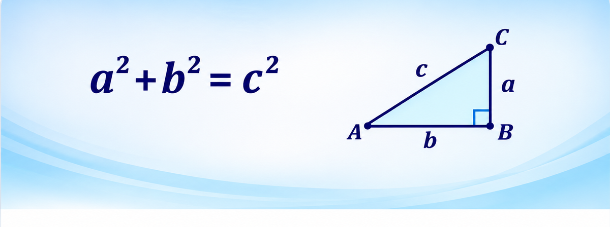
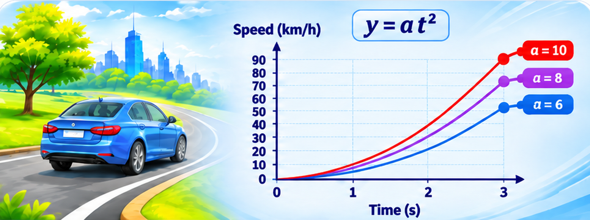
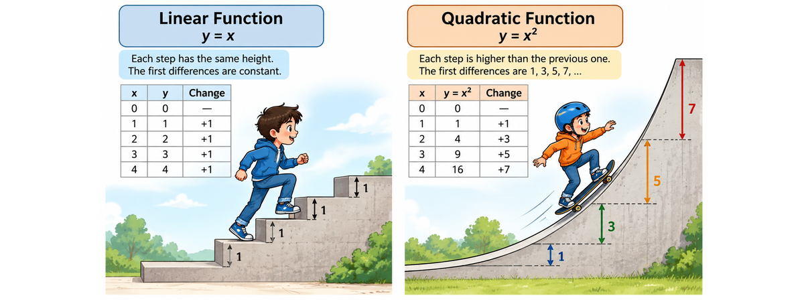
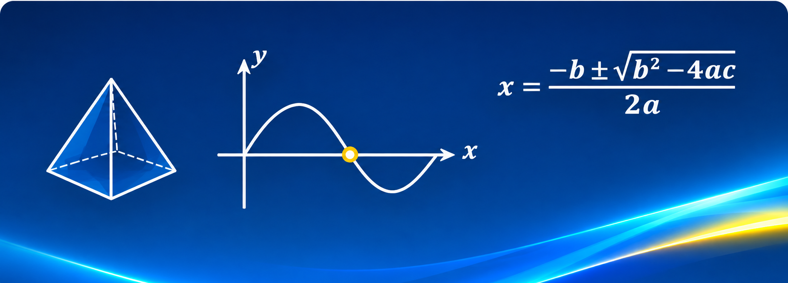

Explore Mathematics
Four ways to explore mathematical ideas — from essential concepts to visual discoveries and deeper thinking.

Math Foundations
Understand essential mathematical language, rules, formulas, number skills, functions, geometry, trigonometry, and data.
Explore foundations →
Math in Real Life
See how mathematical models explain familiar situations and help us design, understand, and solve real problems.
Explore real-life math →
Visual Math & Patterns
Make abstract relationships visible through diagrams, graphs, step patterns, first differences, and second differences.
Explore visual math →
Mathematical Thinking
Explore clever strategies, formula discovery, geometric reasoning, theorems, and creative problem solving.
Explore deeper thinking →LEARN WITH GUIDANCE
In-Class Learning
Free resources are a great place to begin. In class, students can ask questions, test ideas, receive guidance, explain their reasoning, and build understanding through structured learning and discussion.